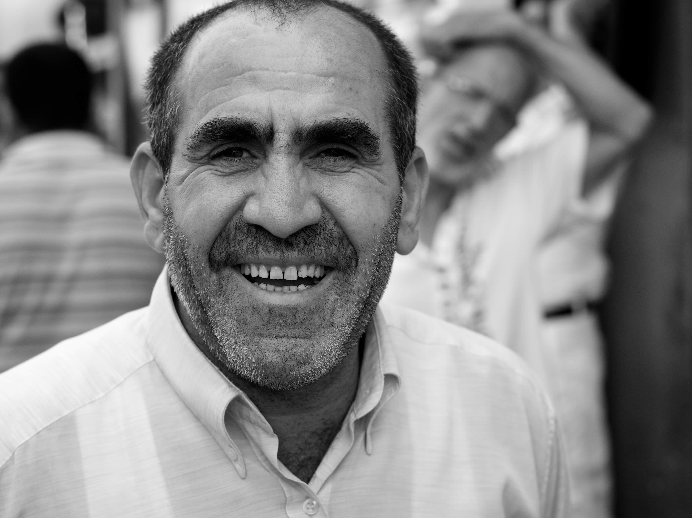
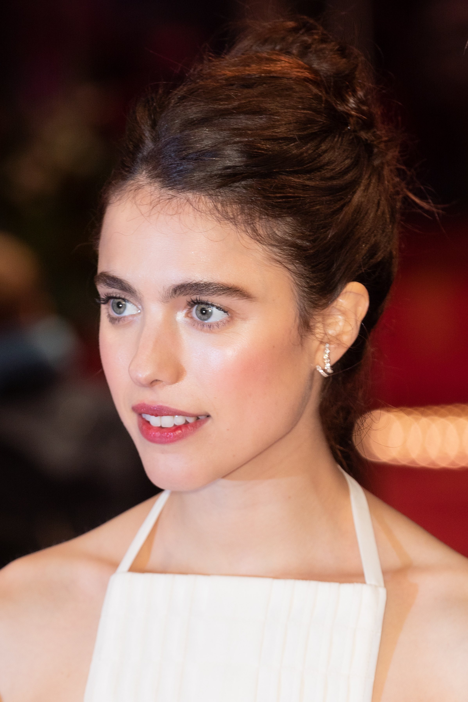
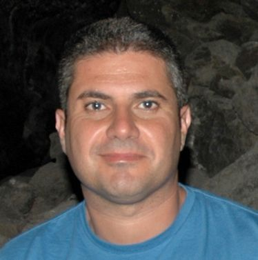

Nuestros jugadores
Laura Sanchez
Portera
Nuestro muro infranqueable. Con reflejos felinos y una agilidad sorprendente, Laura protege nuestra portería con pasión y determinación. Su liderazgo inspira a todo el equipo.

Manolo Perez
Central
El corazón de nuestra defensa. Manolo es un jugador sólido y experimentado, con una visión de juego excepcional. Su capacidad para anticipar las jugadas y recuperar balones es fundamental para nuestro éxito.
Javier Ortega
Boya
Nuestra arma secreta. Con una potencia y precisión increíbles, Javier es un especialista en los lanzamientos a puerta. Su presencia en la boya siempre mantiene a los rivales en alerta.
Nuestro equipo directivo
Marta Hernandez
CEO
La mente maestra detrás de nuestro proyecto. Marta es una líder visionaria con una gran pasión por el waterpolo. Su experiencia y capacidad de gestión son fundamentales para el crecimiento del club.
Farid Toloun
CTO
El cerebro tecnológico del equipo. Farid es un experto en el desarrollo de soluciones innovadoras para optimizar nuestro rendimiento deportivo. Su conocimiento en análisis de datos nos permite tomar decisiones más inteligentes.

Karim Oulali
COO
El motor del club. Karim es un profesional altamente organizado y eficiente, encargado de gestionar las operaciones diarias. Su dedicación y compromiso aseguran que todo funcione a la perfección.
